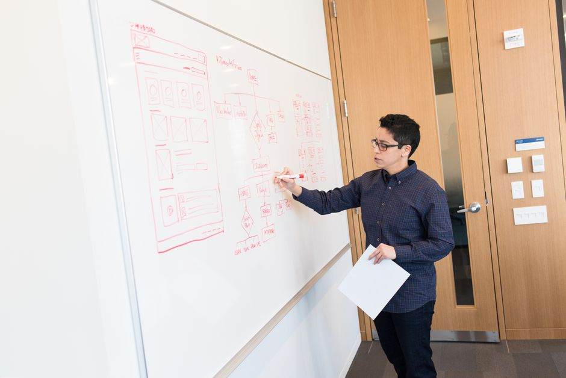

Model Registries Explained: Versioning More Than Weights
A model file on its own tells you almost nothing. Real reproducibility means versioning the data, code, environment, and decisions that produced it.

The weights file is a red herring
I used to think a saved model was, well, the model. You train something, checkpoint the weights, and that file becomes the artefact you ship. It is only after watching a 'reproduce last quarter's result' request go badly wrong that you realise the weights are the least interesting part of the story. A tensor of floating point numbers tells you nothing about how it got that way.
Say a colleague hands you a checkpoint that scored 0.91 F1 on some internal benchmark. Can you retrain it if the file gets corrupted? Can you explain to an auditor why it makes a particular decision? Can you tell whether it is safe to swap into a new pipeline that feeds it slightly different features? With only the weights, the honest answer to all three is no. You are holding the output of a process without any record of the process itself.
This is the gap a model registry is supposed to close. Not a folder of .pt or .pkl files with timestamps in the name, but a system that treats a model as a bundle: the weights, yes, but also the data snapshot, the training code commit, the hyperparameters, the environment, the evaluation results, and the approval history. Miss any one of these and the version number you assign is decorative rather than meaningful.
What actually needs a version number
Start with data. If you retrain a fraud detection model next month on an updated transaction table, you have not made 'the same model with fresh weights'; you have made a different model, because the underlying distribution has shifted and the label definitions may have quietly changed too. A registry entry should point to an exact, immutable snapshot or a content hash of the training set, not a live table name that will look different by the time someone checks it. Without that, 'v3 of the fraud model' is a name attached to a moving target.
Then there is code. It is tempting to assume the model architecture is fixed once training starts, but preprocessing scripts, feature engineering, and even the random seed handling change constantly during development. I have seen two 'identical' training runs produce meaningfully different validation curves because a tokenisation step was silently updated between them. Tying a registry entry to a specific git commit hash, not a branch name, is the only way to guarantee that 're-running the pipeline' actually reruns the same pipeline.
Environment matters more than most people expect. A model trained with one version of a numerical library can produce measurably different outputs than the same code run with a newer version, especially anywhere floating point operations or random initialisation are involved. Recording the container image or a locked dependency file alongside the model means the difference between 'this regressed because the data changed' and 'this regressed because someone upgraded a package' becomes answerable in minutes rather than days.
Finally, hyperparameters and evaluation protocol. A learning rate, a class-weighting scheme, the exact split used for validation: these decisions shape the model as much as the architecture does. If your evaluation numbers were computed on a split that later turns out to share rows with the training set, the whole comparison between model versions collapses. The registry should store the split definition itself, or a hash of it, not just the resulting metric.

A worked example of why this matters
Imagine a team maintaining a churn prediction model. Version 4 scores 0.78 AUC on the holdout set and gets deployed. Three months later, version 5 is trained on more recent data and scores 0.81 AUC, so it replaces version 4 in production. A month after that, complaints roll in: the new model is flagging loyal, long-tenure customers as high churn risk far more often than before.
With a proper registry, tracing this takes an afternoon. You pull up the two entries and compare data snapshots: version 5's training window happened to overlap with a billing system migration that temporarily mislabelled a batch of cancelled accounts as active. You compare feature definitions: the 'days since last login' feature was recomputed slightly differently after a schema change, shifting its distribution. You compare the evaluation split: reassuringly, both used disjoint, time-ordered holdouts, so the AUC comparison itself was fair; the problem was upstream in the data, not in the metric.
Without the registry, this same investigation could take days of asking around, and the temptation is to just retrain again and hope the problem goes away, which is how silent regressions become permanent. The registry does not prevent the mistake; it makes the mistake findable, and it lets you roll back to version 4 with confidence about exactly what you are rolling back to, rather than a vague sense that 'the old one was fine'.
There is also a governance angle that becomes unavoidable once a model touches real decisions about people. If a regulator or an internal review asks why a specific prediction was made six months ago, 'we don't have that exact model version any more' is not an acceptable answer. A registry entry with a fixed data snapshot, code commit, and environment lets you reconstruct the exact conditions under which a decision was produced, which is a much stronger position than trying to reason about it after the fact from memory or scattered notebooks.
The practical takeaway
If you are setting up a registry, or evaluating whether your current one is doing its job, ask a simple test question: given only a version identifier, can someone with no other context reconstruct exactly what was trained, on what data, with what code, in what environment, and evaluated how? If the answer involves phrases like 'probably' or 'I think it was around then', the registry is tracking a filename, not a model.
The discipline is not glamorous. It means writing down data hashes, pinning dependency versions, and storing split definitions even when it feels like bureaucratic overhead during a fast-moving project. But the cost of skipping it is paid later, usually at the worst possible time: during an incident, an audit, or a comparison between two models that turns out to be quietly unfair. Treat the weights as one field in a larger record, not the record itself, and version everything that would need to be true for someone else to trust your result.
